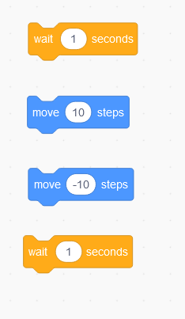
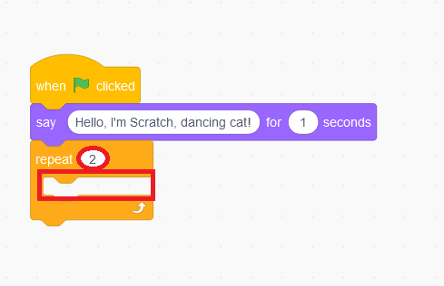

Programowanie na Start
- Poznanie pracy programisty
- Podstawy kodowania
- Narzędzia do nauki
Wyzwanie 1
Początki programowania poznamy w środowisku podobnym do Minecrafta:
Wyzwanie dodatkowe
Zobacz przykładowe programy w Scratch:
Pobierz plik dancing cat i otwórz w
Scratchu . Ułóż bloki w czerwonym prostokącie i spraw, żeby kot "tańczył"

